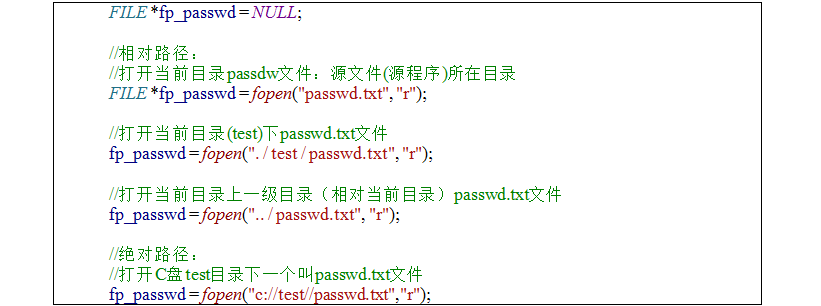

文件操作
1、文件分类：
①文本文件（例：记事本）、
②二进制文件（例：视频文件），优点：所占内存较小
操作文件地址的两种方式：①相对路径 ②绝对路径

2、文件打开与关闭
①格式：FILE *fp = fopen(“路径”，“r”)
做判断 文件是否为空；

打开失败情况：
①找不到文件②没有权限 ③程序打开文件超出上线；

关闭文件操做：

3、写文件
格式：fputc('A',fp)

打开模式：

4、读取文件
格式：fgetc( fp)

注意：文件类型指针不需要用户操作；

读取整篇文件使用EOF作为判断结束标志

5、写文件内容的步骤：
1.以写的形式打开文件
2.判断文件的可用性
3.写文件||读文件
4.关闭文件
打开模式：
w:文件不存在会创建一个新文件，如果有文件则清空文件原始内容；
r以只读形式打开，不会创建新文件 如果文件不会存在会报错
a以追加的方式打开文件 文件不存在则创建文件 有文件则在文件结尾追加文件

6、行读写

7、行读取


每次读取一行

注意：指定最大读取字符串的长度减一
8、feof判断文件流是否到结尾， eof判断字符是否到结尾
格式：feof（fp）

格式化文件
①写文件fprintf（）

②读文件fscanf（）

小结：
标准输入输出
scanf() printf()
格式化字符串
sscnaf（） sprintf（）
格式化文件读写
fscanf （） fprintf（）